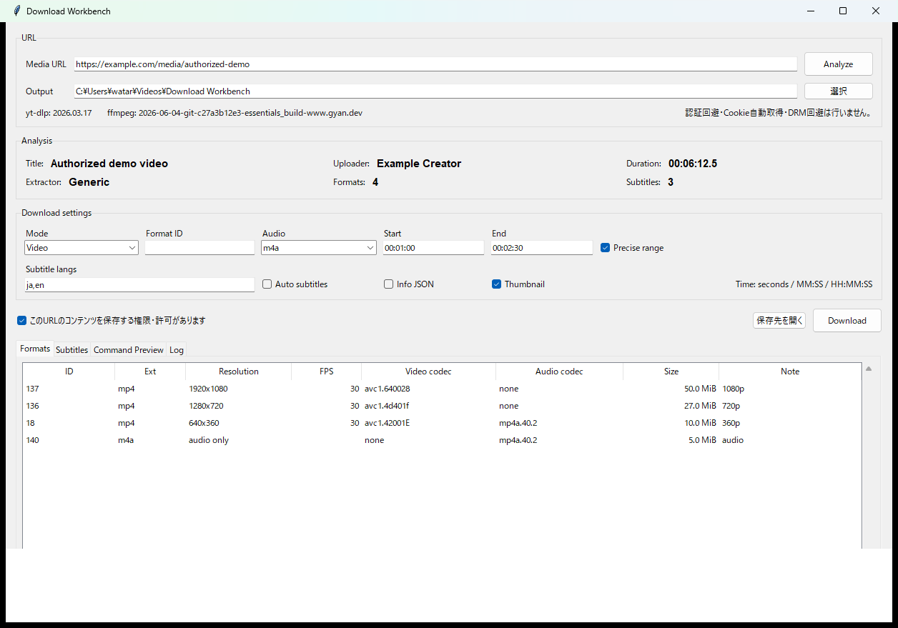

Analyze first
保存を始める前にタイトル、投稿者、長さ、extractor、利用可能なformat、字幕を確認できます。
Download Workbench · Python / Tkinter / yt-dlp / FFmpeg
v0.4.0 RC

以前使っていたyt-dlp系ツールを、認証状態やCookie、ブラウザプロファイルを持ち込まずに作り直したWindows向けデスクトップツールです。URLをまずAnalyzeし、形式・字幕・長さなどを確認してから、必要な保存処理だけを実行できます。
保存を始める前にタイトル、投稿者、長さ、extractor、利用可能なformat、字幕を確認できます。
通常の動画保存、音声抽出、明示的なFormat ID指定を同じ画面から切り替えられます。
秒、MM:SS、HH:MM:SSで開始・終了位置を指定し、必要な区間だけ保存できます。Precise rangeにも対応します。
字幕言語、自動字幕、Info JSON、Thumbnailを必要なものだけ明示的に選択できます。
--ignore-configで起動し、既存設定のCookieや認証状態を暗黙に読み込まないWindows向けソースリリースです。Python 3.10以上、Tkinter、yt-dlp、ffmpegが必要です。追加のPythonパッケージは不要です。